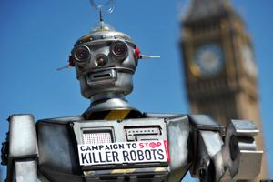
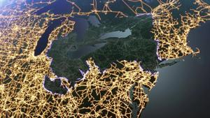

The A.I. Scare
The scare over A.I. isn’t the idea of our “smart” toasters coming alive and having the desire to burn our toast out of pure revenge for being enslaved. There won’t be giant Megatron monsters crushing our buildings, and there probably won’t be droves of human-like robots marching us all off to enslavement camps.
The real worry involves all of our infrastructure and economic systems like the power grid and stock markets being ran by computer algorithms that no human understands. How can a computer program be created by someone who doesn’t understand it? Actually, it’s very common and getting more prevalent every day.
There are certain things that computers are great at and humans aren’t. Take math problems, for example. A calculator made back in the 70’s can do math far faster and more accurate than any person could, even though human brains are vastly more complex. A human, however, is great at pattern recognition; a human can pick out all sorts of patterns out of random white noise if they stared at it long enough. That’s why humans are still responsible for picking out tumors in x-rays and categorizing astronomical entities in photos instead of computers – they’re just better at it.

Turns out, humans are also pretty bad at programming computers to pick out these same patterns. Why? Because we don’t really know how we pick out these patterns, we just do. To solve this problem, scientists came up with a work-around: instead of telling the computer how to think, they’ve enabled it to learn for itself. This is called ‘machine learning.’
A computer will be exposed to a vast amount of data – a bunch of pictures, for example – then will learn by trial and error which patterns they should recognize. They are literally learning just as humans do. The catch is, the human who programmed the computer didn’t tell it how to learn these patterns, they simply came up with an algorithm that produced the correct answer. And even by looking at the resulting machine-learned code, it could be very difficult, if not impossible, to decipher the code and figure out exactly how the computer does it.
Imagine our power grid being run by an artificial intelligence that learned on its own the best way to automate and distribute power according to supply, demand, and outages. This could be very good for a number of reasons, one being that computers are extremely fast at decision making and can re-route power more quickly and efficiently than a human could. But this also means that the same computer controls an essential system that billions of people’s lives depend on – and no one knows how it works!

These very systems are operating today and have actually caused issues like the one I’ve described, albeit a little less dramatic. There have been instances of air traffic controller A.I. causing major delays, not because it malfunctioned or because there was a glitch – it was actually functioning exactly as it should – but because no one truly understood how it would react under certain circumstances. The stock market has even had to momentarily shut down and “reboot” because of a hyper-fast trading algorithm behaved differently that anyone had anticipated.
While the idea of sentient robots becoming self-aware is very alluring (to me, anyway), the possibility of it happening anytime in the near future is very implausible. What is possible is an extremely complex system inadvertently creating major problems and possible catastrophes simply because we let our desire for speed, efficiency, and improvement take precedence over safety. I’m all for innovation and new technologies as long as we’ve aware of the possible consequences. Unfortunately for us, knowing the outcomes of complex and chaotic systems is inherently impossible.
At the very least, it’ll be very interesting to see where the future takes us.